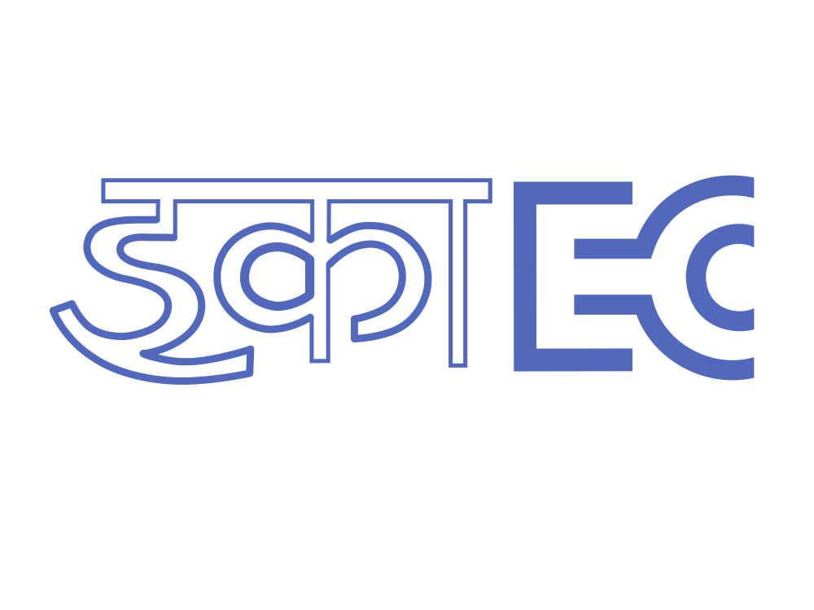
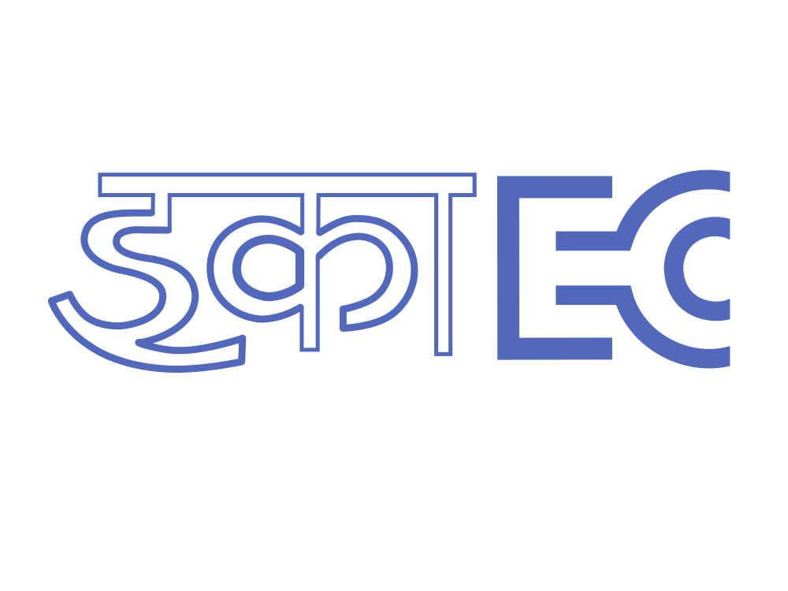

June 2021 - May 2022
at INFOSYS
At Infosys limited my role is to identify and understand the applicaility of digital technology in solving business problems across
multiple domains leveraging Data,Cloud, AI and other new emerging technologies.
 

In 2019, as a Software Research Intern, I conducted extensive web development research, boosting modern technology utilization by 20%
and cutting project costs by 16%. I led web design and development for a residential community and a Ride-Sharing Platform, increasing user
engagement by 30%. Collaboratively, I reduced project development time by 25% and improved code quality by 10%.

Stock exchanges are hard to foresee due to their unpredictable
framework elements.The main aim is to discover an ideal AI model
that predicts future ‘Close Price’ of stocks through a Comparative
report between various machine learning, Deep learning, and Timeseries forecasting techniques like ARIMA, Random Forest Regressor,
Linear Regression, LSTM , SVM Regressor is performed and analyzed
with regards to its prediction accuracy and performance.

ImageMaster is a comprehensive image processing system that integrates a robust image database with advanced machine learning algorithms and a user-friendly web application. Focused on achieving high accuracy in image recognition, particularly handwritten digits, the project set a target prediction accuracy of above 95%. Through meticulous development and optimization, the machine learning models excelled, reaching an impressive 98% prediction accuracy. The web application component of ImageMaster enhances user experience by simplifying image uploads and facilitating easy exploration of classifications and predictions. ImageMaster represents a harmonious blend of database management, sophisticated algorithmic execution, and intuitive design, catering to a wide range of image processing tasks and use cases.

Project on Fraudulent Transaction Detection in Banking Systems using BankSim Dataset and Graph-Based Machine Learning: This project employs the BankSim dataset to simulate real-world banking transactions and detect fraud. It innovates by integrating graph-based machine learning with the Neo4j graph database, analyzing transaction networks to identify suspicious patterns. Key techniques include extracting raw attributes, deriving network features, and employing machine learning models like SVMs and Random Forests for enhanced accuracy. The team's approach resulted in high prediction accuracy, highlighting the potential of graph databases in fraud detection. Additionally, a user-friendly web application was developed for transaction analysis. This project exemplifies the effective combination of graph databases, machine learning, and financial security applications.